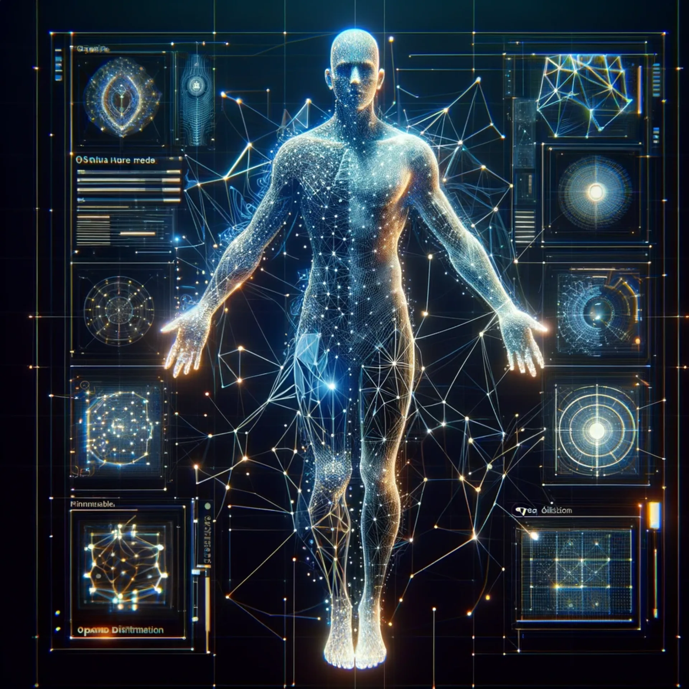
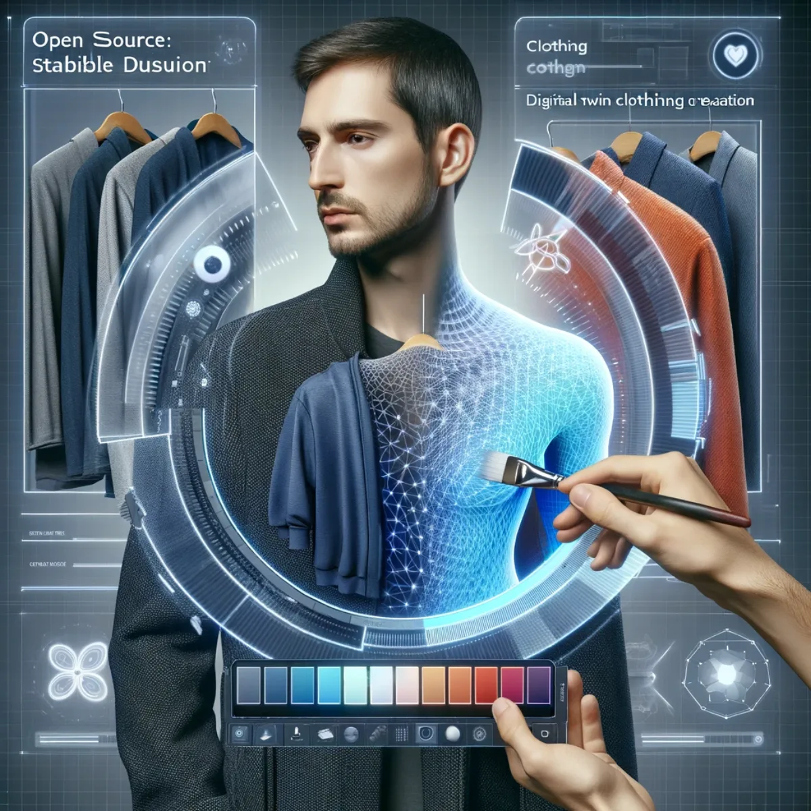

Pathways / Mind & self
Avatar Builder
Your digital twin. An open-source pipeline, five stages deep: body, clothing, rigging and movement, emotion mapping, and a cloned voice to speak with.

Open source: Stable Diffusion
Digital twin body creation
Immerse yourself in the art of virtual avatar creation with Stable Diffusion, customised for digital twin body creation. Witness the birth of your digital twin as advanced algorithms weave together your essence in cyberspace. Here, every digital line and node is a stroke of genius, crafting a 3D masterpiece that mirrors your unique physicality in a realm without limits.

Open source: Stable Diffusion
Digital twin clothing creation
Fashion meets futurism with Stable Diffusion, customised for digital twin clothing creation. Dress your digital twin in bespoke virtual garments, choosing from an endless wardrobe of textures, colours and styles. Personalise your avatar's attire with a simple click, draping them in digital fabric that defines the next trend in the metaverse.
Open source: Blender & Unity
Character rigging & movement
Bring your avatar and other characters to life with Blender and Unity, customised for character rigging and movement. This interface is your stage, and you're the director and puppeteer, syncing every joint and bone to orchestrate fluid, lifelike animations. Control the narrative of your digital cast with precision, crafting stories that move and inspire.
Open source: Stable Diffusion
Character emotion mapping
Navigate the nuances of non-verbal communication with Stable Diffusion, customised for character emotion mapping. Sculpt smiles, forge frowns, and choreograph the subtle symphony of human emotion on the digital visage of your creation. With each slider's adjustment, breathe life into pixels, transforming them into reflections of the human soul.
Open source: text to speech
Voice cloning
Let your words transcend reality with open-source text-to-speech voice cloning. Our interface is a crucible for voice alchemy, where your message is moulded into auditory gold. Transform text into a chorus of cloned cadences, and tune your digital echo to convey your essence through every syllable spoken in the virtual ether.
Keep exploring